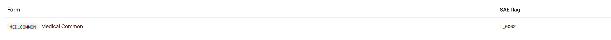
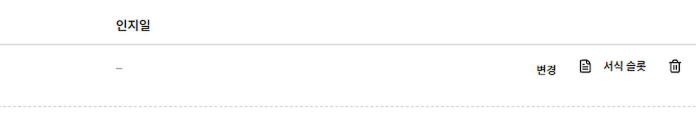
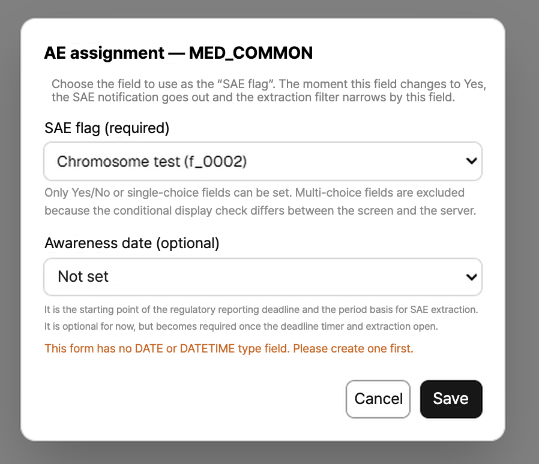
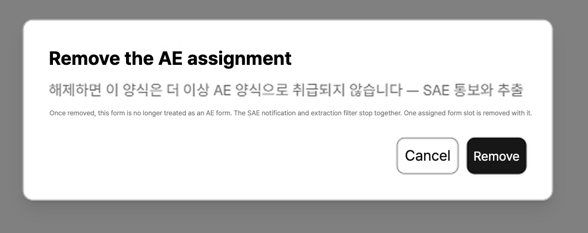
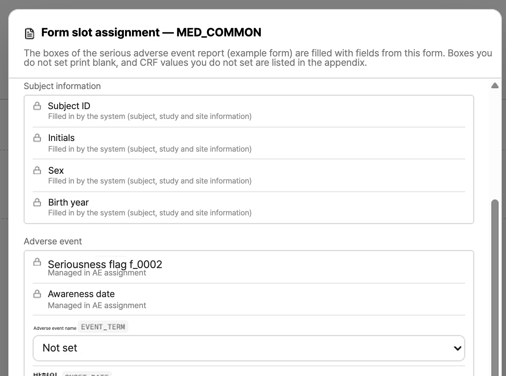
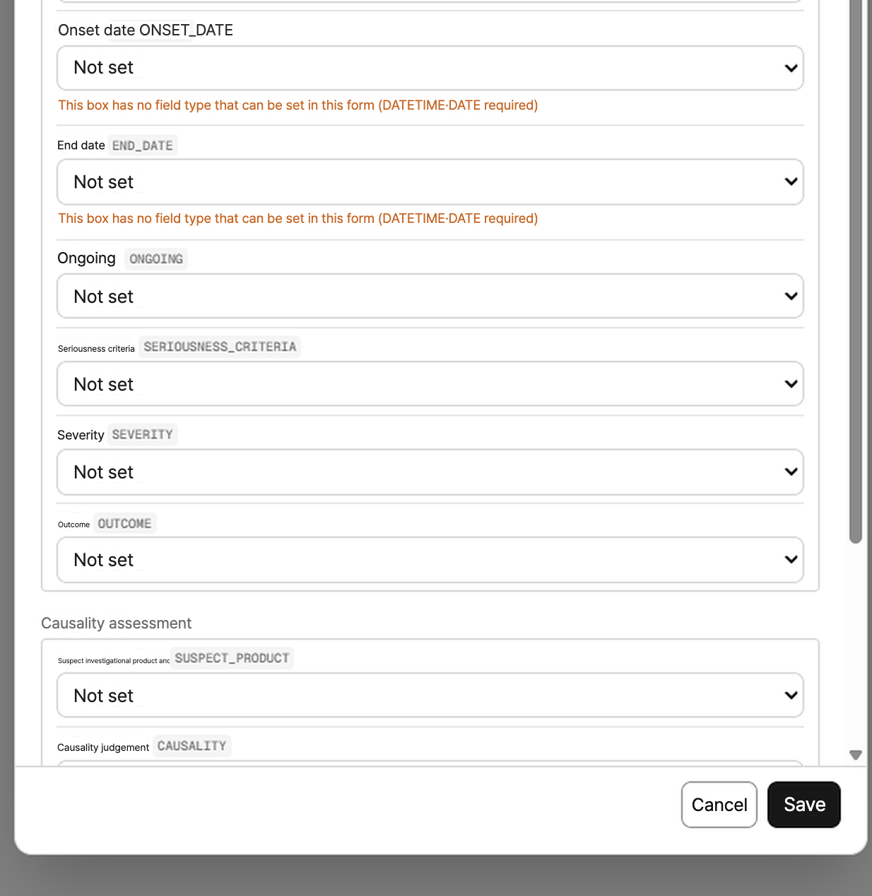
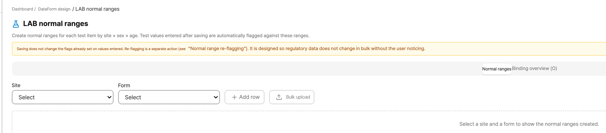

AE assignment · LAB normal ranges
SAE flag assignment · Report form slots · SCR-CRF-015 normal ranges
AE assignment
- 1.1Screen layout
- 1.2SAE flag assignment
- 1.3Assignment result and row actions
- 1.4Changing an assignment
- 1.5Removing an assignment
1.1Screen layout
Overview
This screen sets, for each project, which field on the adverse event (AE) form is the “seriousness flag”. When the value of the field set here changes from No to Yes, a serious adverse event (SAE) notification is sent. The assignment sits outside the form, so you can see which form is the AE form in this project at a glance without opening the form.
Screen guide

Search — find a form by code, name or domain.
Form chip list — forms not yet assigned. Select one to open the assignment window 1.2. Once a form is assigned, it drops out of this list and moves up to the table above.
The path is left menu Study management > AE assignment. It sits directly below CRF Management.
The guidance under the title summarizes the whole screen — “Assign the field to use as the ‘SAE flag’ on the AE form. When its value changes from No to Yes, an SAE notification is sent.”
Form and SAE flag columns — the assigned form and the field chosen in that form.
When nothing is assigned, the table is empty and shows “No form is assigned. Select an AE form below to assign it.”
Warning at the bottom of the screen — “The SAE flag can only be assigned to BOOLEAN, SELECT or RADIO type fields. If the assigned field disappears because of a form revision, publishing that version is blocked.” This is the most important line in this volume (see Precautions below).
Awareness date column — the starting point of the regulatory reporting deadline. It is optional, so it can be left blank 1.2.
Precautions
Must check Data corruption · Form cannot be completed
- • If you delete a field that is assigned here from the form, you can no longer publish that version. The assignment is on this screen, while the field is edited in the form under CRF Management, so the cause and the symptom appear on different screens. Before you delete a field from a form, check here first whether that field is assigned.
1.2SAE flag assignment
Overview
This window opens when you select a form in the list. There are only two things to set: the field used as the SAE flag (required) and the field used as the awareness date (optional). The candidate list shows only fields of usable types. Rather than letting you pick a field that cannot be used and then get stuck, the list is built so that such a field cannot be chosen in the first place.
Screen guide

SAE flag (required) — choose the field used as the SAE flag. Only Yes/No or single-choice types appear as candidates.
Awareness date (optional) — choose the date field to use as the starting point of the regulatory reporting deadline. Only Date or Date-time types appear as candidates.
Save — applies the assignment. When you save, the window closes and a row appears in the table above 1.3.
The target form code is shown in the window title, so check here that you have not opened a different form.
Candidate limit notice — “Only Yes/No or single-choice fields can be assigned. Multi-choice fields are excluded because conditional display is decided differently on screen and on the server.”
Awareness date notice — “This is the starting point of the regulatory reporting deadline and the period basis for SAE extraction. It is optional for now, but it becomes required once the deadline timer and extraction are enabled.”
Red notice — “This form has no DATE or DATETIME type field — please create one first.” It is a notice, not an error. You must first create a date field in the form before you can choose it as the awareness date.
Cancel — closes the window without assigning.
Precautions
Easily misunderstood behavior
- • The awareness date is optional for now, but do not leave it blank. The clock that counts the regulatory reporting deadline starts from this date, and the period basis for SAE extraction uses the same value. The screen warns in advance that it becomes required once the deadline timer and extraction are enabled, so if the form has no date field, it is better to create one first.
1.3Assignment result and row actions
Overview
When you save, the window closes and a row appears in the table. The form is removed from the chip list below, so if a form is in the table, it is assigned; if it is below, it is not assigned. At the right end of each row there are three actions: Change · Form slot · Remove.
Screen guide


Change — changes the assigned field 1.4.
Form slot — sets which field of this form fills which box of the serious adverse event report form 2.1.
Trash can — removes the assignment 1.5.
Form column — the form code and name.
SAE flag column — shows the key of the chosen field. It is the field key, not the display name.
Awareness date column — stays – if no date is assigned.
Precautions
Easily misunderstood behavior
- • A form can have only one assignment. You cannot assign the same form again; to change the field, use Change. In the chip list below, a form that has disappeared is one that is already assigned.
1.4Changing an assignment
Overview
Select Change in a row to open the same window you used to assign. The only difference is that the currently assigned values are already filled in. When you change the field and save, the new field works as the seriousness flag from that point on.
Screen guide

SAE flag — change it to another field. The candidate limits are the same as when assigning 1.2.
Save — applies the change.
The currently assigned field is filled in as display name (field key).
The awareness date also opens with its current value filled in — for now it reads Not set.
The red notice stays — this form still has no date field.
Check the form code in the window title to confirm which row you are editing.
Cancel — closes the window without changing anything.
Precautions
Easily misunderstood behavior
- • Even if you do not touch the awareness date box, the values shown in the window are saved as they are. This window always saves both boxes together, which is why the current values are filled in when it opens. To clear the awareness date, change it to Not set and save.
1.5Removing an assignment
Overview
Select the trash can in a row to open a confirmation window. When you remove the assignment, the form is no longer treated as an AE form — SAE notification and the extraction filter stop together, and the report form slots assigned to that form are also removed.
Screen guide

Remove — removes the assignment. The form returns to the chip list below.
Window title — Remove the AE assignment.
The body warns in advance of the scope of the impact — “If you remove it, this form is no longer treated as an AE form — SAE notification and the extraction filter stop together. The N assigned report form slots are also removed.” The count is shown as a number, so check how much you will lose before you decide.
Cancel — closes the window without removing anything.
Precautions
Must check Data corruption · Form cannot be completed
- • Removing the assignment also removes the report form slots. Slots are settings attached to the AE assignment, so they are deleted along with it, and to restore them you must assign again from the beginning. If you only want to change the field, use Change, not Remove 1.4.
SAE report form slots
- 2.1Form slot assignment layout
- 2.2Seriousness and severity
2.1Form slot assignment layout
Overview
When a serious adverse event occurs, you must report it to the regulator on a prescribed form. This window is where you pair each box on that form with the field on this form that fills it in advance. Once paired, the report is filled in automatically, and boxes you do not assign are printed blank. Depending on their nature, boxes are either boxes you cannot edit or boxes you choose from.
Screen guide

Boxes you choose — choose from the fields of this form. Each box accepts only certain types, so the candidates are filtered.
Window header note — “The boxes of the serious adverse event report (example form) are filled with fields from this form. Boxes you do not assign print blank, and CRF values you do not assign appear in the appendix.”
Subject information section — divided into the same groups as the form.
Boxes marked with a lock cannot be chosen — “Filled in by the system (subject, study and site information)”. Subject ID, initials, sex and birth year fall into this group.
Adverse event section — the boxes that describe the event itself.
The seriousness flag box has a lock and “Managed in AE assignment”. The field you set in Chapter 1 is entered here automatically.
The awareness date works the same way — the value chosen in AE assignment is used as it is. These two boxes are the link between Chapters 1 and 2.
Precautions
Easily misunderstood behavior
- • Boxes you do not touch are also kept as they are when you save. This window opens with every box filled with its current value and re-submits everything at once on save. Because of this structure, changes that someone else makes while the window is open are overwritten. If several people are editing the same form, check again before you save.
2.2Seriousness and severity
Overview
When you scroll down the window, the seriousness criteria and severity boxes appear side by side. Their names are similar, so they are easy to read as one, but the axes that decide regulatory reporting are different. Seriousness asks about the outcome, such as death, hospitalization or a life-threatening event, while severity asks about the intensity, such as mild, moderate or severe. It is the seriousness side that decides the reporting obligation.
Screen guide

Seriousness criteria — the box that holds why the event is serious. It takes codes such as death, hospitalization or life-threatening, and it must always be set together with the seriousness flag.
Severity — the box that holds how strong the symptom is. It takes mild, moderate or severe (or a CTCAE grade), and has nothing to do with the reporting obligation.
Save — applies the assignment.
Red notice — “This form has no field of a type this box accepts (DATETIME or DATE needed).” It appears for boxes that need a date, such as onset date or end date. You must first create a field of that type in the form before you can choose it.
Ongoing — whether the event is still in progress.
Outcome — the result of the event, such as recovered, sequelae or death.
Causality assessment section — covers the relationship to the investigational product.
Suspect investigational product and device — which product is suspected.
Cancel — closes the window without assigning.
Criteria that separate the two axes
| Seriousness | Severity | |
|---|---|---|
| What it asks | How serious the outcome is | How strong the symptom is |
| Example values | Death · hospitalization · life-threatening · disability | Mild · moderate · severe (CTCAE grade) |
| Reporting obligation | This axis decides whether an SAE is reported | None |
| Form box | Seriousness flag · seriousness criteria | Severity |
| Easily confused example | Mild, but hospitalized → a serious case | Severe headache → not a serious case |
Precautions
Must check Data corruption · Form cannot be completed
- • ⛔ Even if you swap the two assignments, the system does not block it. Saving goes through and the form publishes, because there is no server rule that checks this spot. If you swap them, a case that should be reported may not be reported, or a case that need not be reported may be reported. Before you save, check by hand that the seriousness criteria box holds a result code and the severity box holds a severity grade.
LAB normal ranges
- 3.1Screen layout
3.1Screen layout
Overview
This screen creates the normal ranges for test items. Ranges are entered by site × sex × age, and after saving, the test values entered are compared against these ranges and automatically flagged as Normal, Low or High. The same test can have different criteria at different sites, so you start by selecting the site first.
Screen guide

Site — choose the participating site for which to enter ranges. For roles assigned to a specific site, only that site opens.
Form — choose the CRF that contains the test items. The table appears below only after you choose both a site and a form.
+ Add row — enter the ranges one line at a time.
⬆ Bulk upload — uploads several lines at once. It overwrites or adds to existing rows without deleting them (see Precautions below).
The path is Dashboard / DataForm Design / LAB normal ranges. In the left menu it is Study management > LAB normal ranges.
Guidance under the title — “Enter normal ranges for each test item by site × sex × age. After saving, test values entered later are flagged automatically against these ranges.”
Yellow banner — “Saving does not change the flags of values already entered — re-flagging is a separate action.” This is the most important line on this screen (see Precautions below).
Normal ranges and Binding overview tabs — the second tab shows which test items in this project are set as flagging targets. The number in parentheses is the count.
Before you select a site and a form, the screen is empty with the message “Select a site and a form to show the saved normal ranges.”
Three things to remember on this screen
- • Existing flags do not change when you save — to flag values that were already entered, you must run a separate re-flagging. This is by design, so that regulatory data does not change in bulk without the user noticing
- • You do not have to fill every age band — entering only the adult ranges first is normal operation. An empty age band is not an error; it means flagging is skipped for that band
- • Bulk upload overwrites; it does not replace — rows not in the uploaded file are not deleted and stay as they are. To rebuild everything from scratch, delete the existing rows first
Precautions
Must check Data corruption · Form cannot be completed
- • Even if you correct a range, values already flagged stay as they are. Right after saving, it is easy to look at existing data and conclude that the change was “not applied”, but this is normal behavior. To flag past values again, run the normal range re-flagging separately. It is safer to check what will change first, and then run it.